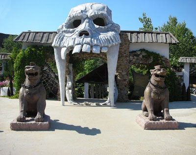
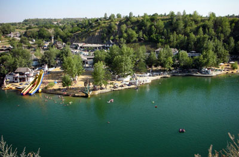
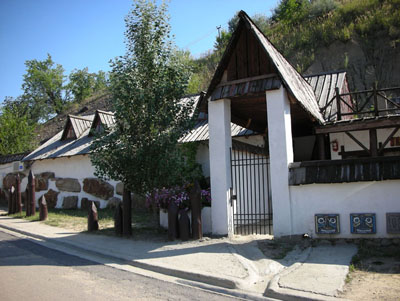
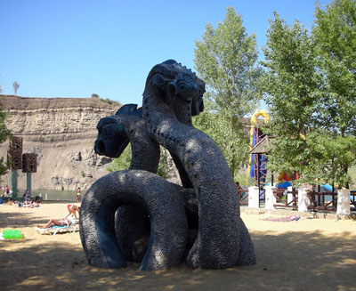

Внутрирегиональный и въездной туризм в Ростовской области: ресурсный потенциал, состояние, перспективы // Вестник Национальной академии туризма. 2008. №3 (7). - С. 48 - 50.
Туристские ресурсы выполняют доминантную роль в формировании всей структуры внутреннего и въездного туризма в регионе. Так, в Краснодарском крае интенсивно развиваются купально-пляжный и лечебно-оздоровительный виды внутреннего въездного туризма, благодаря теплому Черному морю с длительным купальным периодом, минеральным лечебным водам (мацестинским, анапским, горячеключевским и др.), единственному в России субтропическому климату с мягкой зимой и очень теплым летом.
В другом российском регионе, городах Кавказских Минеральных Вод уже более двухсот лет как получил прописку лечебно-оздоровительный туризм, так как здесь богатые выходы уникальных минеральных источников, на базе которых сформировались известные курорты - Кисловодск, Пятигорск, Ессентуки и др. Все остальные виды туризма на Черноморском побережье и в кавминводской группе курортов, такие как экскурсии, спелеологический, экстремальный, этнографический туризм имеют второстепенное, подчиненное значение, и не определяют формирование потоков туристов в эти самые популярные курортные местности нашей страны.
Экскурсии, культурный, религиозный туризм являются основными видами в городах «Золотого кольца России». Их ресурсной базой стали храмы, соборы, церкви, монастыри, представляющие собой гордость русского церковного зодчества.
Но не каждому субъекту Федерации определены судьбой богатые природные или историко-культурные туристские ресурсы, которые могут стать целью приезда для знакомства с ними тысяч туристов из других регионов России и зарубежных государств. Таких регионов в России немного, значительно больше субъектов Федерации бедных туристскими ресурсами высокого качества.
Ростовская область относится к территориям со слабо развитым въездным и внутрирегиональным туризмом, хотя область расположена на юге европейской части России, отличающимся теплым летом и изобилием овощей и фруктов, (к чему стремятся во время летнего отпуска российские граждане), по ее территории протекает река Дон, здесь родина А.П. Чехова и М.А. Шолохова, сохранились образцы материальной культуры, связанные с историей донского казачества. На учете во Всероссийском обществе охраны памятников истории и культуры более 8 тыс. достопримечательностей, получивших статус федерального значения. Казалось бы, достаточный ресурсный туристский потенциал, но въездной поток в область не сформировался, хотя для его создания делается немало областной туристской администрацией и туристскими фирмами (постоянное участие в региональных и международных туристских выставках, выпуск путеводителей и др.).
Численность посетивших Ростовскую область в 2005 г. (данные 2006 и 2007 гг. пока не обнародованы) составила около 398 тыс. чел. Доля приехавших с деловыми и профессиональными целями, так называемых деловых туристов, на поток которых туристские фирмы никоим образом не влияют, составила 73,9%. Следовательно, иногородних граждан с различными целями - туристскими (лечение, отдых, экскурсии), посещение родственников и др. в 2005 г. область приняла всего около 104 тыс. [1], что не идет ни в какое сравнение ни с Краснодарским краем, ни с кавминводской группой курортов, обладающих уникальными в пределах России туристскими ресурсами. Только Черноморское побережье Краснодарского края в настоящее время посещают в год до 15 млн отдыхающих, курорты КМВ - около 500 тыс.
В чем причина отсутствия интереса у россиян к Ростовской области как к туристской дестинации? В Областной целевой программе «Развитие туризма в Ростовской области» на 2008 - 2010 годы указывается ряд факторов, сдерживающих развитие туризма:
Отсутствие комплексной программы реализации туристского потенциала с учетом специализации региона на туристском рынке, выделение целевых сегментов и приоритетов развития, четкого позиционирования узнаваемого образа Ростовской области.
Неудовлетворительное состояние туристской индустрии.
Отсутствие маркетинговой стратегии продвижения туристского продукта Ростовской области.
Отсутствие системы мониторинга и оперативного аудита состояния туристской отрасли.
Но можно ли согласиться, что именно эти факторы лимитируют развитие туризма в Ростовской области? Есть ли основания считать их первопричиной? Или они все же вторичны, а неразвитость въездного туризма кроется в чем-то другом?
Нам представляется, что причины, отрицательно сказывающиеся на развитие въездного туризма в Ростовской области, связаны в основном со следующим:
-
Невысокие оценки качественных свойств историко-культурных достопримечательностей, вовлекаемых в туристский процесс, их низкий бонитет, не способность генерировать потоки въездного туризма, как это наблюдается в Москве, Санкт-Петербурге, городах «Золотого кольца России» и других немногочисленных местностях России, где туристские ресурсы имеют международную известность и вызывают интерес у миллионов людей со всего света.
-
Неправильно выбранная стратегия развития въездного туризма в области, уже не одно десятилетие зиждущаяся, в основном, на экскурсионной деятельности. Практически на нескольких экскурсиях: обзорной по Ростову-на-Дону, не имеющему достопримечательностей международного уровня, в Таганрог на родину А.П. Чехова, в бывшие столицы донского казачества Новочеркасск и станицу Старочеркасскую, город Азов, музей-заповедник «Танаис», характеризующийся высокой археологической ценностью, но низкой туристской привлекательностью.
-
Ошибочность мнения, что казачья тематика, признаваемая ведущей в экскурсионной практике, может привлечь на Дон массы туристов. Известно, что импульс к посещению новых, непознанных мест дают уникальные достопримечательности международного значения. Донские же казаки в силу особенностей формирования своей общности и сурового военного быта не оставили известных в мире шедевров живописи, ваянии и зодчестве.
-
Отсутствие в областных программах развития туризма пляжно-купального и водного его видов с активными средствами передвижения (на гребных и парусных туристских судах), что для южных с теплым летом территорий, наличием безопасной для рекреации реки Дон, крупных искусственных водоемов является органичным.
Если слабое развитие въездного туризма по причинам, высказанным выше, совершенно объективно и подтверждается статистическими данными, то бытующее мнение о недостаточной массовости внутреннего регионального туризма, на базе которого обычно и начинают формироваться туры въездного потока, вызывает серьезные возражения.
В Ростовской области имеется ряд образцов эффективного использования водных объектов для летнего отдыха жителей своего края. В качестве примера охарактеризую деятельность гостинично-ресторанного комплекса «Эльдорадо», созданного на искусственном озере. Его сегодня можно считать примером рекультивации карьеров в рекреационных целях не только для Ростовской области, но и всей России.
До 1995 г. находящееся в 140 км к северу от Ростова-на-Дону озеро, возникшее на месте заброшенной горной выработки, было известно как отличный водоем для купания только жителям расположенных вблизи него населенных пунктов. В 1993 г. директор туристской фирмы «АИШ» И.З. Штимер и В.М. Бессчетный предложили план по созданию на озере летней зоны отдыха - гостинично-ресторанного комплекса. Были проведены, согласно Государственному стандарту (ГОСТ 17.5.3.04-83), соответствующие работы, требуемые при рекультивации земель для их дальнейшего рекреационного использования: вертикальное планирование территории; обеспечение стабильности грунтов при строительстве сооружений для отдыха; проектирование и строительство зон рекреации возникшего в котловане озера для организованного массового отдыха и купания. После чего началось строительство, и в 1995 г. созданный рекреационный комплекс, получивший название «Эльдорадо», принял первых отдыхающих (рис. 1).

Рис. 1. Вход на территорию гостинично-ресторанного комплекса «Эльдорадо»
В настоящее время вода озера отвечают всем санитарным требованиям (в течение летнего сезона ежедневно ведется контроль за ее качеством органами Роспотребнадзора). Идеальному состоянию воды способствует то, что питается искусственное озеро родниковыми водами и в пределах его бассейна отсутствуют какие-либо вредные производства и населенные пункты, откуда могли бы поступать в него загрязненные промышленные и коммунально-бытовые сточные воды. Кроме того, создана специальная защита озера от сбросов в него из канализационной системы самого комплекса.
Озеро в течение летнего периода не подвергается эвтрофикации, поэтому в нем не происходит «цветения» воды (интенсивного развития сине-зеленных и диатомовых водорослей), как это отмечается на всех искусственных водоемах Ростовской области - Цимлянском, Веселовском водохранилищах, а также в Таганрогском заливе Азовского моря.
Температуры воды в озере в летний период весьма благоприятные для купания. По классификации, принятой в курортологии, вода относится к тепловатой и теплой:
15 - 30 июня -19 - 21 °С
1 - 15 июля -20 - 22 °С
16 - 31 июля -24 - 26 °С
1 - 15 августа -25 - 27 °С
16- 31 августа -24 - 26 °С
На озере созданы искусственные песчаные пляжи, и ежегодно вывозятся пески, ставшие загрязненными, и завозятся новые партии чистого песка, предназначаемые для реставрации пляжей и дна мелководий (рис. 2).

Рис. 2. Искусственно созданный пляж «Эльдорадо»
На территории комплекса «Эльдорадо» работает 5 гостиниц, которые могут одновременно принять до сотни туристов. Созданы условия для отдыха родителей с детьми (рис. 3,4). На всей рекреационной части территории в большом количестве установлены оригинальные скульптуры на темы индейского эпоса, вызывающие неподдельный интерес как у детей, так и у взрослых, и придающие особый сказочный колорит всей зоне отдыха.

Рис. 3. Одна из гостиниц комплекса «Эльдорадо»

Рис. 4. Сказочный дракон на детской площадке
Фото Т. Радченко
Уже в июне загрузка комплекса составляет 90%, в июле и августе достигает 100%. Кроме того, в течение дня его посещают без ночевки до 700 отдыхающих, использующих весь рекреационный потенциал «Эльдорадо»: пляж, инженерные сооружения на пляже, лодки, кафе и др.
С каждым годом расширяется география местностей, из которых прибывают в «Эльдорадо» рекреанты. В 2007 г. 80% среди них составили ростовчане, 4% - жители Каменск-Шахтинска, 10% - других населенных пунктов Ростовской области, 5% - Москвы, Санкт-Петербурга, Воронежа, Липецка, Краснодарского края, 1% - гости из-за рубежа.
Несколько тысяч жителей Ростовской области, которые не могли выехать на отдых в другие регионы страны или которым по медицинским показаниям противопоказана смена климата, получили за 13 лет работы «Эльдорадо» полноценный отдых в пределах своего края на некогда неизвестном озере.
Для летнего отдыха жителями Ростовской области активно используется река Дон, главным образом, ее участок от Цимлянского водохранилища до Ростова-на-Дону. На ее берегах многими предприятиями созданы базы отдыха, принимающие своих сотрудников как в дни уикенда, так и на более длительный период.
Огромное число жителей края на личном автотранспорте и моторных маломерных судах выезжают на отдых и организуют стоянки по берегам Дона. Рыболовы образуют ежегодно целый ряд палаточных лагерей, которые существуют на протяжении всего теплого периода года.
Статистическая отчетность этих групп рекреантов, естественно, отсутствует, но можно с большой долей уверенности предположить, что число отдыхающих за лето исчисляется не одной сотней тысяч.
Правомерно ли будет отнести их к категории туристов? Считаю, что это можно сделать с полным основанием, так как они соответствуют трем главным признакам туриста:
· в период отдыха находятся за пределами обычной среды; выезжают от городов Ростова-на-Дону, Новочеркасска, Шахт и др. (постоянного места жительства) на десятки и более километров;
· пребывают в месте отдыха определенное время, в большинстве своем с ночевкой;
· имеют рекреационную цель поездки (отдых, плавание, рыбалка, фотоохота и т.д.).
Другой используемый природный ресурс в Ростовской области - это минеральные лечебные воды [2]. Ряд санаториев строят тактику лечение на их оздоровительных свойствах. Внутренний лечебно-оздоровительный туристский поток составляет несколько десятков тысяч человек. Только Вешенский санаторий принимает за год более 5000 пациентов [3].
Таким образом, приведенные факты убеждают, что внутрирегиональный туризм имеет массовый характер в Ростовской области. Но его организаторами являются не туристские фирмы, для которых он как источник получения прибыли малоперспективен, а
-
профсоюзные организации предприятий, распределяющие места на базы отдыха,
-
Ростовское региональное отделение фонда социального страхования, выдающее путевки в санатории на социальной основе,
-
сами граждане, становясь временно организаторами своего собственного отдыха, относящегося, согласно туристской классификации, к самодеятельному туризму.
Видами внутрирегионального туризма в Ростовской области, охватывающими основные массы внутренних туристов, являются купально-пляжный, рыболовный, водный на туристских судах (данный вид туризма получил широкое развитие в Областном центре детско-юношеского туризма и экскурсий и городском туристском клубе «Дон»). Въездной же туризм в области сможет развиваться только тогда, когда будут разработаны привлекательные природно-ориентированные программы для жителей других регионов страны на основе сегодняшнего опыта организаторов внутреннего туризма. Их стержневой основой должны стать купально-пляжный и водный (с использованием туристских судов) виды туризма. В настоящее время основания для интенсивного развития въездного туризма отсутствуют. Многолетняя практика показала, что въездной туризм в Ростовской области, построенный только на использовании историко-культурного и этнографического потенциала донского края, не имеет серьезных перспектив.
Проблемы с развитием въездного туризма характерны не только для Ростовской области, но также для преобладающего большинства субъектов Российской Федерации. Можно назвать лишь незначительное количество регионов страны, где въездные туристские потоки определяют лицо туризма как отрасли хозяйства и серьезно влияют на экономику регионов. Наиболее ярко проявляется роль внутреннего въездного и международного въездного туризма в таких субъектах Федерации как Москва и Московская область, Санкт-Петербург, Республика Карелия, Краснодарский, Ставропольский и Алтайский края, Иркутская область и Республика Бурятия. То есть в тех, на территории которых имеются уникальные природные или историко-культурные туристские ресурсы, представляющие интерес не только для отечественных, но и зарубежных туристов.
Литература
1. Областная целевая программа «Развитие туризма в Ростовской области на 2008 - 2010 годы». Администрация Ростовской области. Ростов н/Д, 2007.
2. Долженко Г.П., Назаренко В.С., Токарь В.С., Широкий В.В., Белорусова С.А. Природные лечебные средства Ростовской области, их оценка и использование // Известия вузов. Северо-Кавказский регион. Естественные науки. 2007. №1.
3. Долженко Г.П., Белорусова С.А. Туризм в равнинной части Юга России. Ростовская, Волгоградская, Астраханская области (ресурсы, история, тенденции) - М.: ИКЦ «МарТ»; Ростов н/Д: Издательский центр «МарТ», 2008.